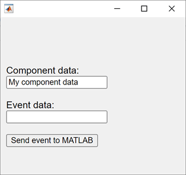
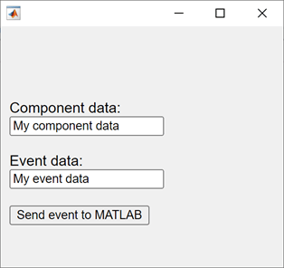

Create HTML Content in Apps
You can add HTML content, including JavaScript®, CSS, and third-party visualizations or widgets, to your app
by using an HTML UI component. Use the uihtml function to create an HTML UI component.
When you add an HTML UI component to your app, write code to communicate between MATLAB® and JavaScript. You can set component data, respond to changes in data, and react to user interaction by sending events.
Communicate Between MATLAB and JavaScript
To connect the MATLAB HTML UI component in your app to your HTML content,
implement a setup function in your HTML file. The
setup function defines and initializes a
local JavaScript
htmlComponent object, which synchronizes with the
MATLAB
HTML object. The JavaScript
htmlComponent object is accessible only from
within the setup function.
The setup function executes whenever one of these
events happens:
The HTML UI component is created in the UI figure and the content has fully loaded.
The
HTMLSourceproperty of the MATLABHTMLobject changes to a new value.
With this connection, you can share information between your MATLAB and JavaScript code using multiple approaches:
Share component data — Use this approach when your HTML component has static data that you need to access from both your MATLAB and JavaScript code. For example, if your component contains a table, store the table data as shared component data.
Send component events — Use this approach to broadcast a notification of a change or interaction. You can send an event from JavaScript to MATLAB or from MATLAB to JavaScript. For example, send an event from JavaScript when a user clicks a button HTML element to react to this interaction in your MATLAB code.
This table gives an overview of the ways that the MATLAB
HTML object and the JavaScript
htmlComponent object can communicate.
| Task | MATLAB | JavaScript |
|---|---|---|
| Access component object. | MATLAB represents the UI component as an
You
can access the fig = uifigure; c = uihtml(fig); | JavaScript represents the UI component as the
You can access the
<script type="text/javascript">
function setup(htmlComponent) {
// Access the htmlComponent object here
}
</script>
|
| Access component data. | The MATLAB
Access the property in your MATLAB code. fig = uifigure; c = uihtml(fig); c.Data = 10; | The JavaScript
Access the property in
the <script type="text/javascript">
function setup(htmlComponent) {
htmlComponent.Data = 5;
}
</script>
|
| Respond to a change in component data. | The MATLAB
Create a
fig = uifigure; c = uihtml(fig); c.DataChangedFcn = @(src,event) disp(event.Data); | The JavaScript
Add a
htmlComponent.addEventListener("DataChanged", updateData);
function updateData(event) {
let changedData = htmlComponent.Data;
// Update HTML or JavaScript with the new data
}For
more information about the
|
| Send and react to an event from MATLAB in JavaScript. | To send an event from MATLAB to JavaScript, use the
For example, you can send an event to react to a user interacting with a MATLAB UI component in your JavaScript code. fig = uifigure;
c = uihtml(fig);
eventData = [1 2 3];
sendEventToHTMLSource(c,"myMATLABEvent",eventData); | To react to an event from MATLAB in your JavaScript code, add a listener that listens
for the MATLAB event to the JavaScript
Access event data sent from
MATLAB using the
htmlComponent.addEventListener("myMATLABEvent", processEvent);
function processEvent(event) {
let eventData = event.Data;
// Update HTML or JavaScript to react to the event
} |
| Send and react to an event from JavaScript in MATLAB. | To react to an event from JavaScript in your MATLAB code, create an
fig = uifigure; c = uihtml(fig); c.HTMLEventReceivedFcn = @(src,event) disp(event); | To send an event from JavaScript to MATLAB, use the
For example, you can send an event to react to a user clicking an HTML button element in your MATLAB code. eventData = [1,2,3];
htmlComponent.sendEventToMATLAB("myHTMLEvent",eventData); |
For an example of an HTML source file that is configured to connect to
a MATLAB
HTML UI component, see Sample HTML Source File.
Convert Data Between MATLAB and JavaScript
You can pass two types of data between the MATLAB HTML component and the JavaScript
htmlComponent object:
Component data, stored in the
Dataproperty of each objectEvent data, associated with an event sent from MATLAB to JavaScript or JavaScript to MATLAB
Because MATLAB and JavaScript support slightly different sets of data types, the component converts the data when it is shared.
When the component converts data from MATLAB to JavaScript:
The component encodes the MATLAB data as JSON-formatted text using the
jsonencodefunction.The component parses the JSON-formatted text to JavaScript data using JSON.parse().
When the component converts data from JavaScript to MATLAB:
The component encodes the JavaScript data as JSON-formatted text using JSON.stringify().
The component parses the JSON-formatted text to MATLAB data using the
jsondecodefunction.
You can use these functions to simulate how your data is sent between MATLAB and JavaScript to help you write and debug your code. For more information, see Debug HTML Content in Apps.
Sample HTML Source File
This example provides a sample HTML source file. Save this code to a
file named sampleHTMLFile.html. You can use this
sample file as a starting point for your own HTML UI components, or
to explore how a component sends data between MATLAB and JavaScript.
The sample file creates three elements:
An edit field to display and edit component data
An edit field to display and edit event data
A button to send an event from JavaScript to MATLAB
The setup function in the sample file defines four callback functions:
dataFromMATLABToHTML— Update the Component data edit field with the current data. This function executes whenever theDataproperty of the MATLABHTMLobject changes.eventFromMATLABToHTML— Update the Event data edit field with the data from the most recent event. This function executes whenever MATLAB sends an event named"MyMATLABEvent"to the HTML source.dataFromHTMLToMATLAB— Update theDataproperty of the JavaScripthtmlComponentobject with the text in the Component data edit field. This function executes whenever a user enters a new value in the edit field. The function triggers theDataChangedFcncallback of the MATLABHTMLobject.eventFromHTMLToMATLAB— Send an event named"MyHTMLSourceEvent"with data from the text in the Event data edit field. This function executes whenever a user clicks the Send event to MATLAB button. The function triggers theHTMLEventReceivedFcncallback of the MATLABHTMLobject.
<!DOCTYPE html>
<html>
<head>
<script type="text/javascript">
function setup(htmlComponent) {
console.log("Setup called:", htmlComponent);
// Code response to data changes in MATLAB
htmlComponent.addEventListener("DataChanged", dataFromMATLABToHTML);
// Code response to events from MATLAB
htmlComponent.addEventListener("MyMATLABEvent", eventFromMATLABToHTML);
// Update the Data property of the htmlComponent object
// This action also updates the Data property of the MATLAB HTML object
// and triggers the DataChangedFcn callback function
let dataInput = document.getElementById("compdata")
dataInput.addEventListener("change", dataFromHTMLToMATLAB);
// Send an event to MATLAB and trigger
// the HTMLEventReceivedFcn callback function
let eventButton = document.getElementById("send");
eventButton.addEventListener("click", eventFromHTMLToMATLAB);
function dataFromMATLABToHTML(event) {
let changedData = htmlComponent.Data;
console.log("New data from MATLAB:", changedData);
// Update your HTML or JavaScript with the new data
let dom = document.getElementById("compdata");
dom.value = changedData;
}
function eventFromMATLABToHTML(event) {
let eventData = event.Data;
console.log("Event from MATLAB with event data:", eventData);
// Update your HTML or JavaScript to react to the event
let dom = document.getElementById("evtdata");
dom.value = eventData;
}
function dataFromHTMLToMATLAB(event) {
newData = event.target.value;
htmlComponent.Data = newData;
console.log("New data in HTML:", newData)
}
function eventFromHTMLToMATLAB(event) {
eventData = document.getElementById("evtdata").value;
htmlComponent.sendEventToMATLAB("MyHTMLSourceEvent", eventData);
console.log("Sending event to MATLAB with event data:", eventData);
}
}
</script>
</head>
<body>
<div style="font-family:sans-serif;">
<label for="compdata">Component data:</label>
<input type="text" id="compdata" name="compdata"><br><br>
<label for="evtdata">Event data:</label>
<input type="text" id="evtdata" name="evtdata"><br><br>
<button id="send">Send event to MATLAB</button>
</div>
</body>
</html>Send Data and Events Between MATLAB and JavaScript
In MATLAB, create an HTML UI component and specify the
HTML source as sampleHTMLFile.html.
Assign DataChangedFcn and
HTMLEventReceivedFcn callbacks
that display the component data and event data,
respectively.
fig = uifigure; h = uihtml(fig, ... "HTMLSource","sampleHTMLFile.html", ... "DataChangedFcn",@(src,event) disp(src.Data), ... "HTMLEventReceivedFcn",@(src,event) disp(event.HTMLEventData), ... "Position",[20 20 200 200]);
Specify the component Data property in
MATLAB. The Component data field
updates to display the data.
h.Data = "My component data";
Send an event from MATLAB to JavaScript and specify some event data. The Event data field updates to display the data.
sendEventToHTMLSource(h,"MyMATLABEvent","My event data")

Update the text in the Component data
field, then press Enter. In MATLAB, the DataChangedFcn
callback executes and displays the updated text in the
Command Window.
Finally, update the text in the Event
data field, then click the
Send event to MATLAB button.
In MATLAB, the HTMLEventReceivedFcn
callback executes and displays the updated text in the
Command Window.